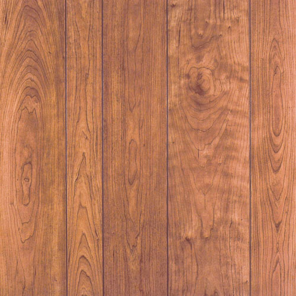

Throwin' It Back to the 70s
The ME Decade
Early 1970s fashion was a fun era. It culminated some of the best elements of the 60s and perfected and/or exaggerated them. Some of the best clothing produced in the 1970s perfectly blended the mods with the hippies.